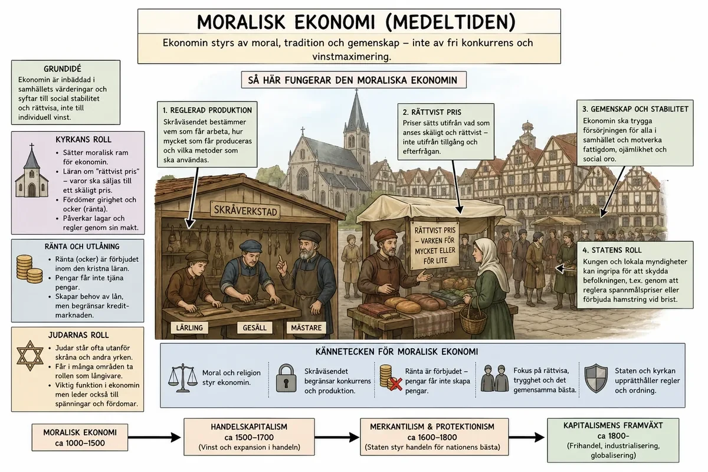
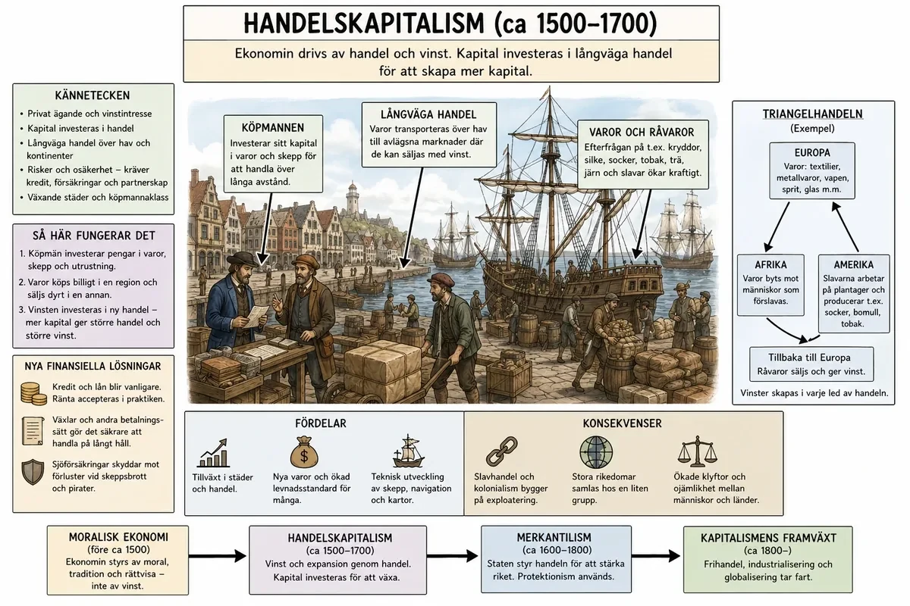
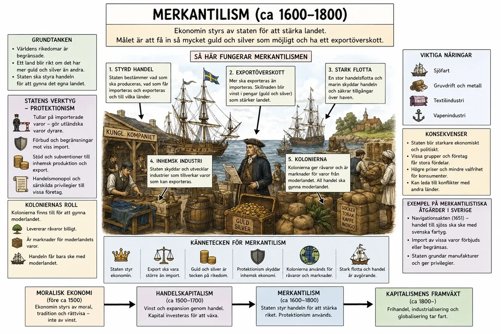
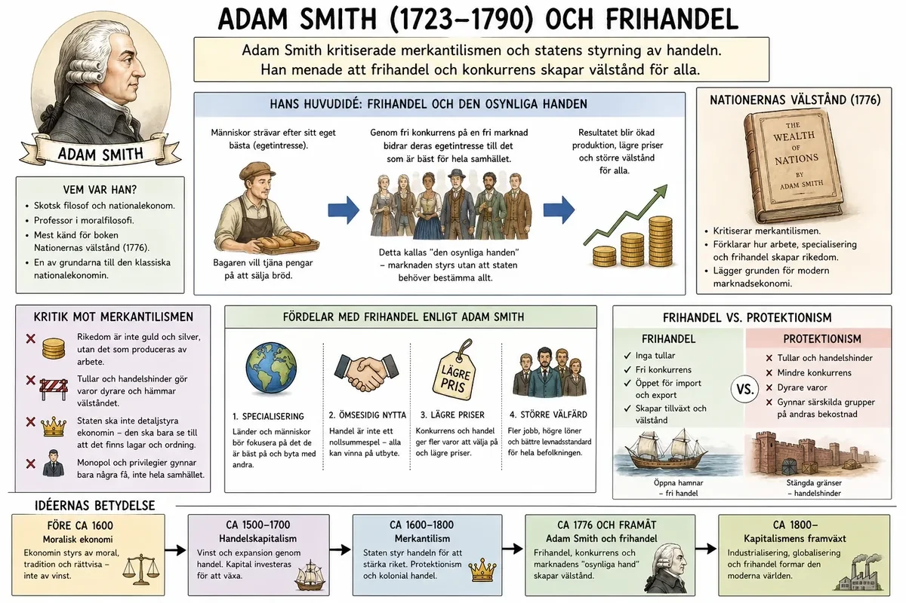

— hur synen på pengar, ränta och vinst förändrades under 800 år —
För att förstå den industriella revolutionen behöver man inte bara förstå jordbrukets förändring, nya maskiner, fabriker och arbetskraft. Man behöver också förstå att människors syn på ekonomi förändrades under lång tid. Ekonomi har inte alltid handlat om fri konkurrens, investeringar, banker, ränta, fabriker och vinst. Under äldre tider tänkte många människor på ekonomi på ett annat sätt. Ekonomin skulle följa tradition, moral, religion och samhällsordning.
Den långa utvecklingen kan förenklas som en rörelse från moralisk ekonomi, vidare till handelskapitalism, och sedan till kapitalism. Under vägen förändrades också synen på ränta, banker och finansmarknader. Det blev allt mer accepterat att pengar inte bara användes för att köpa saker, utan också kunde lånas ut, investeras och användas för att skapa ännu mer pengar.
I det äldre jordbrukssamhället levde de flesta människor på landsbygden. Ekonomin handlade framför allt om att producera det man behövde för att överleva: mat, kläder, redskap och bostäder. Många var bönder, torpare, drängar eller pigor. I städerna fanns hantverkare, köpmän och tjänstefolk, men städerna var ofta små jämfört med landsbygden. I detta samhälle var ekonomin starkt kopplad till tradition och social ordning. Man kan kalla detta för en moralisk ekonomi.
Med moralisk ekonomi menas att ekonomin inte bara styrdes av tanken att tjäna så mycket pengar som möjligt. Den styrdes också av föreställningar om vad som var rätt, rimligt och accepterat. Mat, särskilt bröd och spannmål, sågs inte bara som vanliga varor. Det var livsnödvändiga varor. Om brödpriserna steg kraftigt kunde människor bli arga och protestera, eftersom de ansåg att det fanns en moralisk gräns för hur mycket någon fick tjäna på andras hunger. En köpman som höll inne spannmål för att vänta på högre priser kunde därför uppfattas som girig och omoralisk.
I den moraliska ekonomin fanns också en misstänksamhet mot vissa sätt att tjäna pengar. Särskilt ränta var länge känsligt. Ränta betyder att den som lånar pengar måste betala tillbaka mer än själva lånebeloppet. I många kristna samhällen sågs ränta som moraliskt problematiskt, eftersom man menade att det kunde vara fel att tjäna pengar bara på att någon annan behövde låna. Att ta mycket hög ränta kunde uppfattas som ocker, alltså som ett orättvist utnyttjande av en annan människas svåra situation.
Det betyder inte att lån saknades. Människor lånade pengar även i äldre samhällen. Kungar, adelsmän, bönder, köpmän och städer kunde alla behöva låna. Men synen på ränta var ofta negativ eller begränsad. Ekonomin skulle inte bara handla om vinst, utan om ansvar, måttfullhet och social ordning. Den som hade makt eller rikedom förväntades också ta ansvar. Godsägare, kungar, präster och stadens ledare skulle hjälpa till att bevara ordning. Samhället var mycket ojämlikt, men ojämlikheten motiverades ofta med att alla hade sin plats och sina skyldigheter.
I städerna märktes den äldre synen på ekonomi tydligt i skråväsendet. Ett skrå var en organisation för hantverkare inom ett visst yrke, till exempel bagare, skomakare, skräddare eller smeder. Skråna bestämde vem som fick arbeta inom yrket. Vägen gick från lärling, till gesäll, och sedan till mästare. Först som mästare kunde man ofta öppna en egen verkstad. Skråna kunde också bestämma hur varor skulle tillverkas och ibland påverka priser och kvalitet.
Syftet var att skapa ordning och skydda hantverket. Kunderna skulle kunna lita på att en vara höll god kvalitet. Men skråväsendet begränsade också konkurrensen. Det var svårt för nya personer att starta verksamhet. Det blev också svårare att snabbt förändra produktionen eller införa nya arbetssätt. Detta visar en viktig skillnad mot senare kapitalism. I skråväsendet var målet inte att producera så mycket som möjligt till lägsta möjliga kostnad. Målet var snarare att bevara ordning, yrkesskicklighet och tradition.

Från medeltiden och särskilt från 1500-talet förändrades Europas ekonomi allt mer. Handeln över haven ökade kraftigt. Europeiska stater byggde handelsvägar, kolonier och handelskompanier. Varor som socker, tobak, bomull, kryddor, te, silver och slavar transporterades mellan världsdelar. Detta ledde fram till handelskapitalism.
Handelskapitalism betyder att rikedom framför allt skapades genom handel. Köpmän köpte varor billigt på en plats och sålde dem dyrare på en annan plats. Vinsten kom alltså främst från handelns skillnader: olika priser, olika tillgång på varor och olika marknader. En köpman kunde till exempel köpa ull, tyg, kryddor eller socker på en plats och sälja varorna där efterfrågan var större. Ju större handelsnätverk köpmannen hade, desto större möjlighet fanns det att göra vinst.
Under handelskapitalismen blev kapital allt viktigare. Kapital betyder resurser som kan användas för att skapa mer rikedom. Det kan vara pengar, fartyg, lagerlokaler, handelskontakter, råvaror eller skuldbrev. Kapitalet kunde användas för att köpa in varor, utrusta fartyg och finansiera nya handelsresor. Det var här synen på pengar började förändras. Pengar blev inte bara något man använde för att köpa mat, jord eller varor. Pengar kunde också användas som ett redskap för att skapa mer pengar.
När handeln växte blev det också viktigare med banker och andra finansiella institutioner. Köpmän behövde låna pengar för att utrusta fartyg, köpa varor i förväg och betala för långa handelsresor. En handelsresa kunde ta lång tid och vara riskfylld. Fartyget kunde sjunka, bli attackerat eller komma fram till en marknad där priserna hade förändrats. Därför behövdes människor och institutioner som kunde låna ut pengar, dela risker och ordna betalningar mellan olika platser.
Banker och finansmarknader växte särskilt fram i viktiga handelsstäder. Där samlades köpmän, långivare, investerare och försäkringsgivare. De behövde system för lån, ränta, växlar, aktier och försäkringar. En växel kunde fungera som ett slags betalningslöfte, så att en köpman slapp transportera stora mängder mynt över farliga vägar. Försäkringar gjorde det möjligt att dela risken om ett fartyg eller en last gick förlorad. Aktier gjorde det möjligt för flera personer att satsa pengar i samma företag eller handelsresa och sedan dela på vinsten.
Detta förändrade synen på ränta. Ränta började i högre grad ses som en ersättning för risk och väntan. Den som lånade ut pengar tog en risk, eftersom låntagaren kanske inte kunde betala tillbaka. Den som lånade ut pengar avstod också från att använda pengarna själv under en tid. Därför började fler acceptera tanken att långivaren kunde få betalt i form av ränta. Ränta blev alltså mindre enbart en moralisk fråga och mer en del av ett växande ekonomiskt system.

Under handelskapitalismens tid växte också merkantilismen fram. Merkantilism var en ekonomisk idé som många europeiska stater använde från ungefär 1500-talet till 1700-talet. Merkantilismen byggde på tanken att ett land blev rikt och mäktigt om det samlade på sig mycket guld och silver. För att lyckas med det ville staten sälja mer till andra länder än den köpte från dem. Exporten skulle alltså vara större än importen.
Därför försökte staten styra ekonomin. Den kunde ge stöd till inhemska företag, skapa handelskompanier, införa tullar på utländska varor och skaffa kolonier. Kolonierna var viktiga eftersom de kunde ge råvaror, till exempel bomull, socker, tobak och metaller. De kunde också fungera som marknader där moderlandet kunde sälja sina varor. Merkantilismen handlade alltså inte om fri handel. Den handlade om att staten aktivt skulle skydda och stärka den egna ekonomin.
Ekonomi och politik hörde nära ihop. Ett rikt land kunde bygga större arméer, starkare flottor och få mer makt i världen. Man kan säga att merkantilismen såg världsekonomin som en tävling mellan stater. Om ett land blev rikare, kunde ett annat land bli fattigare. Därför försökte varje stat kontrollera handeln till sin egen fördel.
Samtidigt fortsatte banker och finansmarknader att bli viktigare. Stater behövde ofta låna pengar för att kriga, bygga flottor och administrera kolonier. Kungar och regeringar kunde låna från banker eller rika finansiärer. Det gjorde att ekonomi, politik och krig knöts samman. Den stat som hade lättare att låna pengar kunde också lättare finansiera handel, krig och kolonial expansion. På så sätt blev finansmarknaden en maktfaktor.

Under 1700-talet började flera tänkare kritisera merkantilismen. De menade att ekonomin inte borde styras så hårt av staten. I stället borde handel och produktion få utvecklas friare. Denna idé kallas frihandel. Frihandel innebär att länder ska kunna handla med varandra utan höga tullar, förbud och stark statlig kontroll. Tanken är att handel blir bättre om länder får köpa och sälja varor friare. Då kan varje land specialisera sig på det som landet är bra på att producera.
Frihandel blev alltså en tydlig motpol till merkantilismen. Merkantilismen byggde på att staten skulle skydda den egna ekonomin, begränsa importen och styra handeln så att landet blev rikt och mäktigt. Frihandeln byggde i stället på tanken att handel fungerar bäst när varor får röra sig friare mellan länder och när konkurrens får pressa fram bättre och billigare produktion.
En viktig skillnad handlar om synen på konkurrens. Merkantilismen var rädd för att utländska varor skulle skada det egna landet. Frihandeln såg konkurrens som något som kunde göra ekonomin mer effektiv. Om företag möter konkurrens måste de bli bättre, billigare eller mer uppfinningsrika. Frihandelns idéer passade också bättre ihop med den framväxande kapitalismen. När fabriker började producera stora mängder varor behövde företagen större marknader. Det räckte inte alltid att sälja varorna i den egna staden eller det egna landet. Fabriksägare och köpmän ville kunna sälja till många länder. Då blev frihandel en lockande tanke.

Nästa stora steg i utvecklingen var kapitalismen i modern mening. Kapitalism betyder att privatpersoner eller företag äger kapital och använder det för att skapa vinst. Det viktiga är att kapitalet inte bara sparas eller används för handel. Det investeras i produktion. En person med kapital kan köpa maskiner, bygga fabriker, köpa råvaror och anställa arbetare. Målet är att tillverka varor som kan säljas med vinst.
Detta blev särskilt tydligt under den industriella revolutionen. För att starta en fabrik behövdes mycket pengar. Man behövde lokaler, maskiner, energi, råvaror och arbetskraft. Allt detta behövde betalas innan de färdiga varorna kunde säljas. Här blev kapitalet avgörande. Rika köpmän, banker, investerare, jordägare och storbönder kunde ibland använda sina pengar till nya företag. Pengar som tidigare hade tjänats på jordbruk, handel, kolonial handel eller finansverksamhet kunde nu investeras i industri.
Skillnaden mot handelskapitalismen var att vinsten allt mer skapades genom produktion. I stället för att bara köpa billigt och sälja dyrt började kapitalägare tjäna pengar på att organisera arbetet på nya sätt. Maskiner och fabriker gjorde det möjligt att producera fler varor snabbare och billigare än tidigare. Kapitalet användes alltså för att bygga upp en produktion som kunde växa.
Fabriken blev en symbol för den nya kapitalistiska ekonomin. I äldre hantverk hade en mästare ofta arbetat i en mindre verkstad med några lärlingar och gesäller. I förlagssystemet kunde människor arbeta hemma med delar av produktionen. I manufakturer samlades fler arbetare på samma plats, men arbetet var fortfarande ofta beroende av handkraft. I fabriken förändrades detta. Arbetarna samlades i stora lokaler och använde maskiner som drevs av vattenkraft eller ångkraft. Arbetet styrdes av tider, regler och maskinernas rytm. Produktionen blev mer kontrollerad och mer effektiv.
Detta förändrade också relationen mellan människor i ekonomin. Fabriksägaren ägde byggnaden, maskinerna och råvarorna. Arbetaren ägde oftast inte produktionsmedlen, utan sålde sin arbetskraft mot lön. Detta är centralt i kapitalismen. Samhället delades allt tydligare mellan dem som ägde kapital och dem som arbetade för lön. Det betyder inte att alla kapitalister var rika från början eller att alla arbetare var fattiga på samma sätt, men skillnaden mellan kapitalägare och lönearbetare blev en viktig del av det nya industrisamhället.
I den kapitalistiska ekonomin fick banker och finansmarknader en ännu större roll. Fabriker krävde stora investeringar, och det var inte alltid en enskild person hade tillräckligt med pengar. Då kunde banker låna ut kapital. Investerare kunde satsa pengar i företag. Aktiemarknader kunde göra det möjligt för många människor att äga små delar av ett större företag. På så sätt kunde kapital samlas ihop och användas till stora projekt.
Finansmarknaden blev därför en slags motor i den industriella utvecklingen. Den gjorde det möjligt att flytta pengar från dem som hade sparat kapital till dem som ville använda kapitalet för att bygga fabriker, järnvägar, gruvor eller handelsföretag. Men den innebar också risker. Om en investering misslyckades kunde människor förlora pengar. Om banker lånade ut för mycket eller om företag gick i konkurs kunde ekonomiska kriser uppstå.
Synen på ränta förändrades samtidigt. I den äldre moraliska ekonomin hade ränta ofta setts som misstänkt, särskilt om den uppfattades som girig eller orättvis. I den nya kapitalistiska ekonomin blev ränta en mer normal del av systemet. Ränta sågs som priset för att låna pengar. Den som lånade pengar kunde använda dem för att starta eller utveckla ett företag. Den som lånade ut pengar fick ränta som ersättning för risk och för att pengarna bands under en viss tid.
Det betyder inte att all ränta accepterades utan kritik. Hög ränta kunde fortfarande ses som ocker, särskilt om fattiga människor utnyttjades. Men i stort förändrades synen. Ränta, banker och finansmarknader blev allt mer självklara delar av den moderna ekonomin. De gjorde det möjligt att samla kapital, sprida risker och investera i större projekt.
I den moraliska ekonomin kunde vinst uppfattas som misstänkt om den gick emot tradition, rättvisa eller ansvar. I handelskapitalismen blev vinst genom handel mer accepterad. I kapitalismen blev vinst nästan själva motorn i ekonomin. Kapitalisten investerar pengar för att få tillbaka mer pengar. Om vinsten blir stor kan den återinvesteras i fler maskiner, större fabriker och mer produktion. På så sätt kan ekonomin växa.
Detta skapade också en ny syn på förändring. I äldre samhällen var stabilitet ofta ett ideal. Man ville bevara ordningen. I kapitalismen blev förändring mer positivt laddad. Nya maskiner, nya metoder, nya marknader och nya produkter kunde ge större vinster. Detta bidrog till teknisk utveckling. Om en ny maskin kunde producera tyg snabbare än tidigare, kunde fabriksägaren tjäna mer pengar. Därför blev det lönsamt att uppfinna, förbättra och investera. Kapitalismen och den tekniska utvecklingen förstärkte varandra.
Utvecklingen från merkantilism till frihandel visar också hur synen på staten förändrades. I merkantilismen skulle staten styra ekonomin för att stärka landet. Staten skulle skydda den egna produktionen, kontrollera handeln och skaffa kolonier. I frihandelns idévärld skulle staten inte styra handeln lika mycket. Marknaden skulle få större frihet. Företag skulle konkurrera, priser skulle påverkas av utbud och efterfrågan och handel skulle ske där det var mest lönsamt.
Det betyder inte att staten försvann ur ekonomin. Staten fortsatte att vara viktig genom lagar, skatter, vägar, järnvägar, utbildning och ibland militärt skydd. Staten behövdes också för att skydda äganderätten, se till att avtal följdes och skapa regler för banker och företag. Men den ekonomiska tanken förändrades. Fler började tänka att ekonomin kunde utvecklas bäst om människor och företag fick större frihet att köpa, sälja, producera, låna, investera och konkurrera.
Den industriella revolutionen kan därför inte bara förklaras med tekniska uppfinningar. Den hängde också ihop med en förändrad syn på ekonomi. Människor började tänka mer i termer av kapital, investeringar, banker, ränta, marknader, konkurrens och vinst. Den förändringen gjorde det möjligt för fabriker, finansmarknader och industrisamhällen att växa fram.
Historia · Revolutionernas tid · Bakgrund